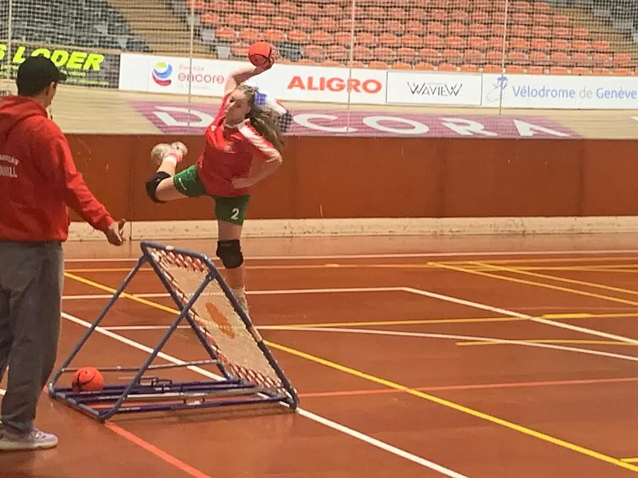

Tchoukball First Session
A no-contact team game where shots rebound off a frame and points are scored by where the ball lands: catching, not colliding, wins the ground.
Before you begin
- Ages
- 13–14
- Group
- 8–24 kids
- Time
- 40–55 min
- Where
- Indoors & Outdoors
- Prep
- Some prep needed

Setup
Test the frame before you test the players: stand where a shooter will stand, throw the session's ball at playing pace, and read the rebound, true, lively and catchable, in the directions the game promises. A frame that fails that test ends the setup, not the session: repair it, re-fasten it, or run the session's teaching games against a wall the adults have approved, and say plainly why, because players calibrate their trust on the first rebound they are offered. Walk the court yourself for the game's real geography, the forbidden zones at both ends, the catching ground behind them, run-off room beyond every landing area, and clear or rule out everything inside that country before a ball is thrown. Set the session's shape in advance and write it on the slate: laws and handling first, shooting against no defence second, defended play last, because a game whose signature is the catch cannot be learned by players still guessing where they may stand. Choose the first teams mixed and balanced by the evidence of the handling round, not by friendship or reputation, the keeper announces them from the slate, and the game's no-contact law makes balanced teams a courtesy this sport can actually keep.
Materials
- one or two tchoukball rebound frames, or a sturdy rebound net the adults have tested for a true, even bounce (the frame is the game's whole geometry, a frame that wobbles, tips or returns the ball wildly is replaced before the session, not cursed during it)
- a tchoukball or a light, grippable ball of similar size that forearms can receive without stinging (the session's ball is chosen for catching confidence. A ball players flinch from teaches flinching, not defence)
- the forbidden-zone markings for each frame (tape, cones or floor lines marking the D-shaped zone in front of each frame, measured and laid before players arrive. The zone is the game's signature law and its lines do not drift mid-session)
- the session slate and chalk (the game's honest record: teams, the laws taught, points by period, and every disputed landing settled and entered. Kept by the session's keeper at the court's side)
Steps
- The framing, ball at rest, the whole court in view: 'The catch is the defence. In this game nobody tackles, nobody blocks, nobody guards a player. You may not touch an opponent, intercept their pass, or step into the forbidden zone while a shot is live. You score by throwing at the frame so the rebound lands on the ground beyond the zone, untouched. They score the same way, and your whole defence is to be standing where the rebound falls and to catch it clean before it lands. That makes this the strangest honest game you will learn this year: the hardest working players are the ones reading a rebound in the air, and the bravest thing on the court is a catch taken at full stretch in front of your own frame. Passes are limited, travelling with the ball is limited, and both limits exist to keep the ball moving and the reading honest. We learn the laws first, we shoot undefended second, and only then do we play, and the slate records landings as they were judged, argued once, settled, and chalked.' The laws are walked, not just said: a volunteer shooter's shot is frozen at the rebound so the room can see the zone, the landing ground and the catching ground with their own eyes.
- Handling and shooting school, the session's foundation, run before any defended play: pairs move the ball the game's way, chest-high passes, caught two-handed, feet set before the throw, the three-pass rhythm counted aloud by the keeper until it is in the players' hands rather than their worries. Shooting is taught against the frame with no defence and the zone empty as the law requires: shooters learn the frame's honest angles by evidence, ten throws each, the landing spots called and chalked where they fall, because a shooter who cannot yet place a rebound has no business being defended. Catchers rehearse the game's real skill on coach-fed rebounds, reading the ball off the frame early, moving feet before hands, receiving with giving arms that absorb rather than slap, and every player rotates through shooting and catching before anyone specialises, because a catcher who has never shot does not yet know what the rebound is being asked to do.
- Defended play, built in short periods the slate keeps: teams take the court with the laws entire, no contact, no interceptions, no player in the zone while a shot is live, steps and passes as taught, and the keeper referees landings from the court's side with one standard: a point is a rebound that lands on legal ground untouched, a save is a catch, and anything disputed is re-stated once from the law, settled, chalked, and played on, because this game's disputes are about geometry, and geometry does not improve with volume. Early periods are stopped kindly and often: a catcher crowding the zone is walked back to the line without blame, a shooter travelling is shown their steps in the open, and the correction is chalked as teaching, never as shame. The slate has a column for laws learned, and it fills faster than the score column in a good first session, which the keeper says aloud so the room hears what progress looks like here.
- The rotation round, when the laws are holding and only then: players rotate positions by the slate's published order, shooters to catching lines, catchers to the link passes, because the game's intelligence lives in the rotation and a player fixed in one job is learning a third of the sport. Teams are rebalanced once, in the open, if the periods have shown a mismatch the mixed start did not predict; the keeper names the evidence, moves the fewest players who will repair it, and chalks the change, because a close game teaches ten times what a procession teaches and engineering one is the keeper's craft, not a favour to the losing side. Between periods the ball rests and arms rest with it. Rebound catching is forearm work, tired arms slap and drop, and the session's pace is set by the slate before goodwill and enthusiasm can spend the players' best catching in the first period and call the rest character.
- Closing, the slate read entire and the frames carried off by their crews: the keeper reads the session aloud, laws taught, periods played, points by period, saves named where the room can name them, and the laws-learned column entire, and the session's one number is agreed and chalked large: the longest rally of consecutive catches the whole court held without a landing, whether it is eleven or two, because that number, honestly counted, is the court's mark to beat next session and nobody else's business. The tell-back is said with the ball resting on the frame: 'An hour ago this game sounded impossible. Score without a goal, defend without touching anyone, win ground by catching. Now the room reads rebounds, shooters place them, catchers move before the ball arrives, and every landing on the slate was judged once, settled and chalked true. The catch is the defence. Next session the mark is waiting, and the frames will be tested before we are.' Frames are inspected as they are carried, net tension, joints, feet, faults noted to the adults, and frame, ball and slate are stored together where the next session will find the whole game in one place.
Variations
Easier: A one-frame version (a small group or a short hall): the whole discipline at one end, handling, undefended shooting, defended play toward a single frame with teams alternating attack, with the zone, the laws and the slate entire.
Harder: A target-shot version (a court whose run-off room is tight): shooters score by rebounding the ball into marked landing boxes of rising value, catchers still defend entire, and the session's reading and catching are coached at full stretch inside safer geography.
Safety
No contact is this game's law, not its aspiration, and the keeper enforces it as safety before sport: a player who reaches across an opponent, body-checks a catching line or dives into another player's ground stops play for a re-teach, and a second offence rests that player to the slate's side for a period. The game's whole safety case is that collisions are designed out, and they stay designed out only while the law is kept. The forbidden zone stays empty while a shot is live: nobody stands in the rebound's first ground, heads are never the catching plan, and a ball rebounding toward a face is a ball let go, always. The slate has never once needed a point that cost an eye. Frames are fastened firm and inspected before play and never leaned on, sat on or moved mid-period; a frame that shifts is a stoppage, reset by the adults or the keeper, not wrestled back by players with the ball live. Catchers are taught receiving arms before defended play, jewellery and watches come off forearms that will take a rebound, and the court's surface is walked at setup: a floor that slides under a full-stretch catch is a floor the session shortens its game for, in the open, before anyone learns it at speed.
Inclusion notes
Tchoukball staffs its honours unusually fairly, and this session says so in the open: the keeper, caller of periods, judge of landings, holder of the slate, runs the game from the court's side at full authority, and the catching line, the game's position of honour, is work done from wherever a catcher reads best: a catcher may defend a marked ground zone from a seated or standing base agreed with the keeper, because the skill being honoured is the read and the hands, not the run that preceded them. Passing chains are built so every player touches the ball inside the pass limit, the laws themselves forbid a game of stars, and the keeper counts quiet players into the next chain by the slate's rotation, not by shouting for the ball over louder voices. Shooting and catching are both taught in the open at teaching pace for as many rehearsals as a player wants before defended play, with no audience but the coach-fed frame; a player whose day is laws, link passes and the slate is not having a lesser session: the framing said the catch is the defence, and the slate's saves column is where this game's respect is written down.
Tried this? Rate it
Your ratings live in this browser only. Nobody else can see them. There are no community ratings here; every star on this card is yours.
Rate this activity, add a note, or write a reflection
Quick reflection
Optional, saved with your rating, and exported with "Copy my week".
Full activity card,